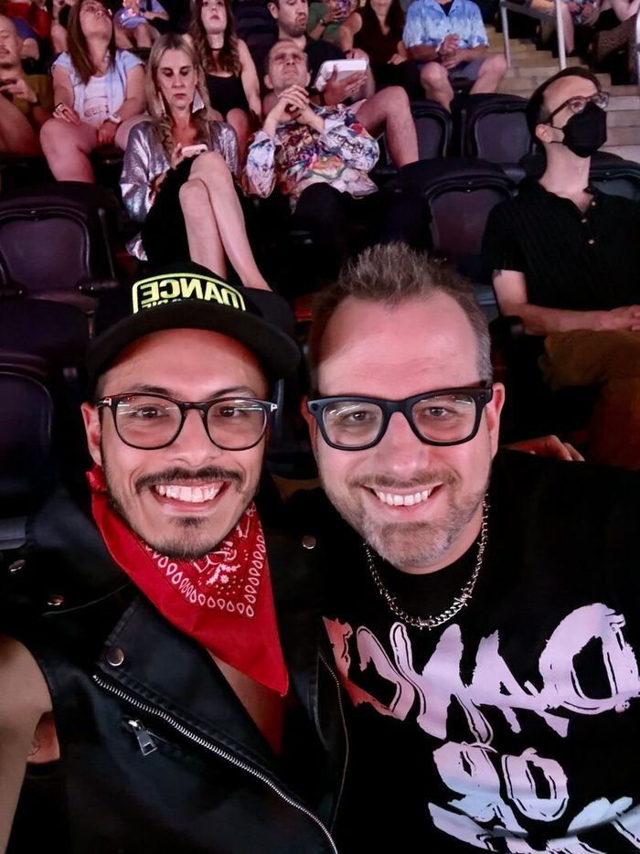
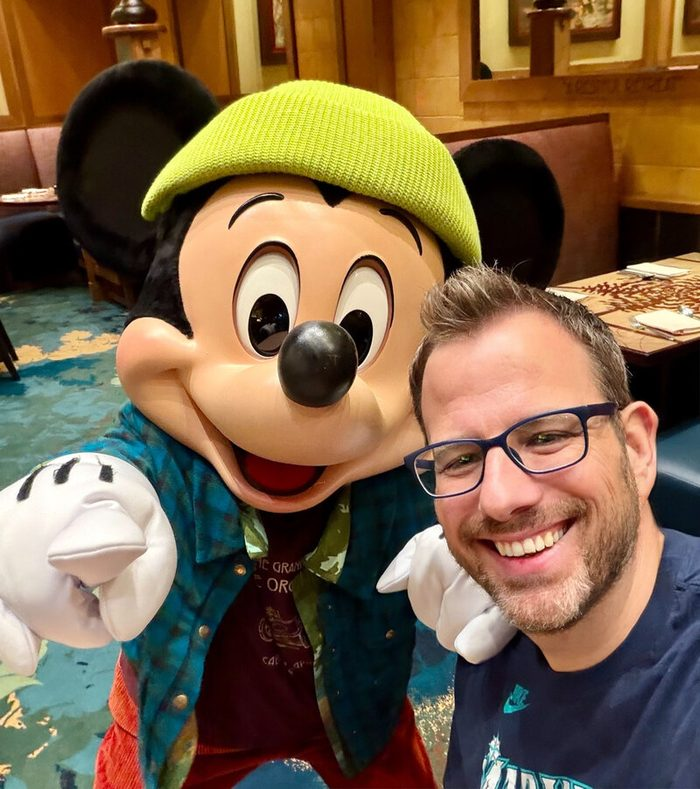
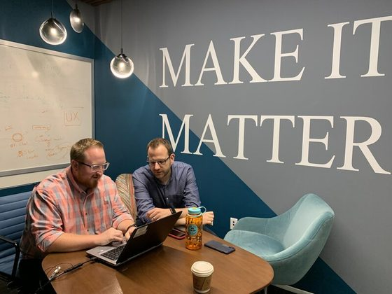
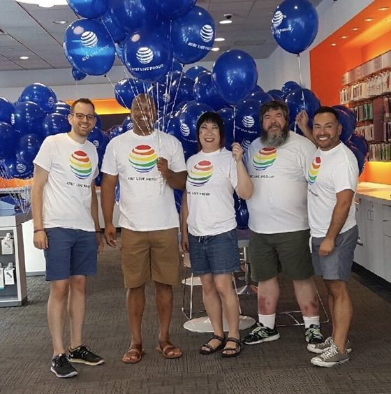
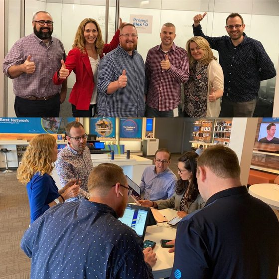

hello, world
Manager of Technical Security Programs at Amazon, leading a team of security TPMs. 20+ years turning complex problems into elegant solutions — from AT&T to Microsoft to Amazon. Tech enthusiast, baseball fan, and always planning the next adventure.
About
I'm a PMP-certified program manager and passionate problem solver with over two decades navigating the intersection of technology, people, and process. Currently I lead a team of security technical program managers at Amazon, working out of the Irvine, California campus and living down the coast in San Diego.
I've always been a tech geek at heart. My journey started in Twin Falls, Idaho, and has taken me from retail floors to enterprise workforce transformation at AT&T, through program management at Microsoft, and into security at Amazon. Along the way, I've learned that the best solutions come from clear communication, relentless curiosity, and a genuine love for understanding how things work.
When I'm not wrangling programs, you'll find me obsessing over the Mariners during baseball season, exploring new places around the world with my husband Joe and our mini pinscher Ellie, or geeking out over the latest in tech. From cruising the Caribbean to wandering through Southeast Asia, travel is my reset button.


Experience
Early Career
Where it all started — field development and regional retail management in the Idaho telecom scene. Built the foundation for a career in tech.
AT&T · 14+ years
Grew from retail sales consultant to Associate Director across a 14-year run. Led workforce transformation initiatives, built cloud-based automation tools for 25,000+ hires, launched onboarding systems that saved $1.2M, managed 20+ training programs, and led a team of 25 in retail. Won the AT&T Summit award and was named LEAGUE Member of the Year for management.



Microsoft · ~3 years
Progressed from Program Manager 2 through Senior Program Manager to Senior Program Manager Lead. Managed strategic programs across the organization, growing scope and impact at each level.
Amazon
Leading programs across Amazon's business security teams, driving cross-functional initiatives that protect customers and scale with the business. Promoted to Manager in 2026 — now leading a team of security technical program managers.
Recommendations
Greg possesses a unique combination of skills that are very strong in technical acumen combined with strategic thinking and a focus on delivering results… His passion for improving the experience and his natural aptitude for innovation combined with masterful collaboration, negotiation and communication skills make him a powerful asset for any organization he supports.
Greg always brought a positive attitude to each project he managed. He has a unique ability to manage complex programs and projects and find solutions to help streamline the needs of the business. Greg is an exceptional leader, he was often the first call I made when I needed guidance or feedback.
Recommendations from LinkedIn.
Contact
Whether it's about tech, program management, travel recs, or Mariners hot takes — I'd love to hear from you.